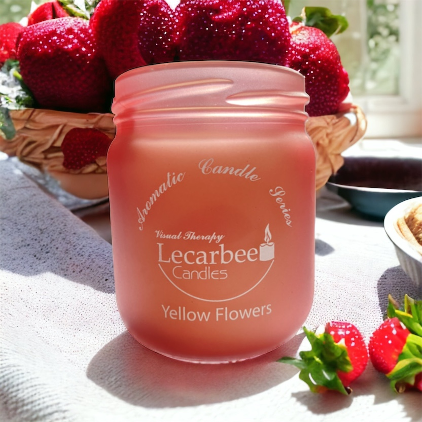

.jpg)
Meditasyon ve yoga, zihin, beden ve ruh sağlığını geliştirmek için kullanılan kadim uygulamalardır. Bu disiplinler, stresi azaltma, iç huzuru bulma ve genel yaşam kalitesini artırma gibi birçok fayda sunarlar. Meditasyon ve yoga pratiği, odaklanmayı, derin nefes almayı ve rahatlama tekniklerini içerir. Bu süreçte, çevresel faktörlerin sağladığı bir atmosfer de büyük bir rol oynar. Mumlar, meditasyon ve yoga pratiğinde sıklıkla kullanılan öğelerden biridir. Bu yazıda, meditasyon ve yoga pratiğinde mumların rolünü ve sağladığı faydaları inceleyeceğiz.
Meditasyonun Gücü
Meditasyon, zihinsel farkındalığı artırmaya ve zihni sakinleştirmeye yönelik bir uygulamadır. Düzenli meditasyon, stresi azaltma, kaygıyı hafifletme, odaklanma yeteneğini geliştirme ve iç huzuru bulma gibi bir dizi olumlu etkiye sahiptir. Meditasyon sırasında zihni sakinleştirmek, dikkati tek bir noktaya odaklamak ve zihinsel gürültüyü azaltmak önemlidir. Bu noktada, meditasyon alanını daha sakin, huzurlu ve rahatlatıcı bir atmosfer yaratmanın yollarını aramak doğal bir düşüncedir.

Mumlar, meditasyon ve yoga pratiğinde sıklıkla kullanılan bir araçtır. Meditasyon alanında mumlar, bir
ambiyans oluşturmak ve zihni rahatlatmak için kullanılır. Işığı ve sıcaklığıyla, mumlar huzurlu bir
atmosfer yaratmaya yardımcı olur. Gözler kapatıldığında, mumların yanışını izlemek, zihni odaklamaya ve
sakinleştirmeye yardımcı olabilir. Ayrıca, mumların yumuşak ışığı, meditasyon sürecinde ruhsal bir
bağlantı hissi yaratır ve iç huzuru artırır.
Huzur ve Sükunet: Meditasyon ve yoga pratiğinde mumlar, huzur ve sükunet hissi yaratmada etkilidir.
Mumların yanışı, zihni sakinleştirir ve gevşemeyi teşvik eder. Meditasyon sırasında mumların ışığını
izlemek, zihni odaklamaya yardımcı olur ve zihinsel gürültüyü azaltır.
Atmosfer Oluşturma: Mumlar, meditasyon alanında huzurlu bir atmosfer yaratmada etkilidir. Yumuşak
ışıkları ve hoş kokularıyla, meditasyon sürecini desteklerler. Odaklanmayı kolaylaştırır ve meditasyon
sırasında zihnin dikkatinin dağılmasını önler.
Zihinsel Konsantrasyon: Mumların ışığını izlemek, zihni odaklamada yardımcı olur. Mumların yanışını
izlemek, dikkati tek bir noktaya odaklamayı kolaylaştırır ve zihinsel konsantrasyonu artırır. Bu,
meditasyon ve yoga pratiğinde daha derin bir deneyim elde etmeye yardımcı olur.
Rahatlama ve Stres Azaltma: Mumların ışığı ve sıcaklığı, rahatlama ve stres azaltma sürecini teşvik
eder. Meditasyon ve yoga pratiği, stresi azaltmak için etkili bir yöntemdir ve mumlar bu süreci
destekler. Yumuşak ışık ve hoş bir kokuyla birlikte, meditasyon ve yoga pratiği sırasında rahatlama
sağlarlar.
Meditasyon ve yoga pratiği için kullanılan farklı mum çeşitleri vardır. Her bir mum çeşidi farklı bir
ambiyans ve enerji sunar. İşte bazı yaygın mum çeşitleri:
Kokulu Mumlar: Kokulu mumlar, meditasyon ve yoga pratiğine hoş bir koku katmak için kullanılır. Lavanta,
sandal ağacı, nane gibi doğal esansiyel yağlarla yapılan kokulu mumlar, rahatlama ve zihni sakinleştirme
sürecine katkıda bulunur.
Renkli Mumlar: Renkli mumlar, meditasyon ve yoga pratiğinde enerjiyi dengelemek veya belirli bir
enerjiyi çekmek için kullanılabilir. Her rengin farklı bir enerjisi ve anlamı vardır. Örneğin, mavi renk
sakinlik ve huzur hissi verirken, sarı renk enerji ve canlılık sunar.
Meditasyon ve yoga pratiği, zihin, beden ve ruh sağlığını geliştiren disiplinlerdir. Bu uygulamaların
etkinliğini artırmak için çevresel faktörlerin sağladığı bir atmosfer büyük önem taşır. Mumlar,
meditasyon ve yoga pratiğinde kullanılan araçlardan biridir ve birçok fayda sunarlar. Mumların ışığı,
sıcaklığı ve kokusu, meditasyon sırasında iç huzuru artırır, zihni odaklamaya yardımcı olur ve rahatlama
sağlar. Doğal mumlar, kokulu mumlar ve renkli mumlar gibi çeşitli mum seçenekleri, meditasyon ve yoga
pratiği deneyimini zenginleştirir. Mumların gücünden yararlanarak, meditasyon ve yoga pratiğinde daha
derin bir deneyim elde etmek mümkündür.